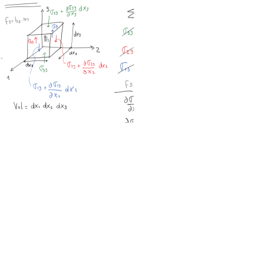
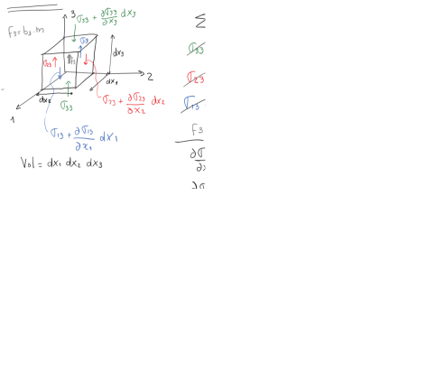
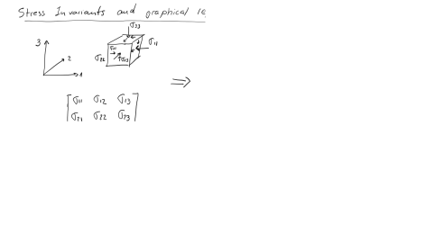
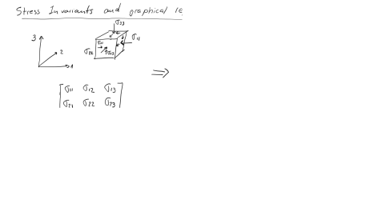
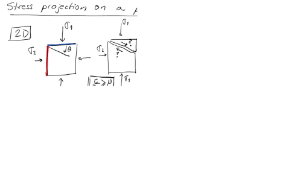
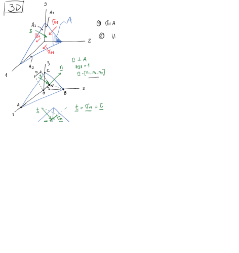

Next: 1.3 WP3: Horizontal Stresses Up: 1. Weekly Projects Previous: 1.1 WP1: Subsurface Stresses, Contents
Borehole imaging http://petrowiki.org/Borehole_imaging in the well from the Vaca Muerta Formation (Project 1) shows the presence of several fractures below Depth E.
We would like to know the shear stresses  and effective normal stresses  acting on these fractures.
and effective normal stresses  acting on these fractures.
Additional borehole images at the depth of leak-off tests show that the azimuth of  is 90
is 90 (i.e., in East-West direction).
(i.e., in East-West direction).
Tasks to be implemented in Matlab, Python, or similar software:
diagram together with the 3D Mohr circle(s).
 from blue to red (e.g., JET colormap) according to the value of
.
from blue to red (e.g., JET colormap) according to the value of
.
 )? What fractures are likely to be hydraulically conductive based on the
criterion and which others are not?
)? What fractures are likely to be hydraulically conductive based on the
criterion and which others are not?
 , dip =
, dip =
 ;
;
Help: check Prof. Foster’s widget for the convention on rotation angles for the principal stress orientations.
The following figure and table summarize the geometry of faults at the High Island Block 24-L near the coast of the Gulf of Mexico and the Texas-Louisiana border.
| Fault ID | Segment origin | Segment end | Average Depth | Dip |
| (Easting, Northing) [ft] | (Easting, Northing) [ft] | [ft] | ||
| F1a | (308,16772) | (3338,16106) | 7250 | 53SW |
| F1b | (3338,16106) | (8116,16556) | 7150 | 53S |
| F1c | (8116,16556) | (12481,17589) | 7050 | 53SE |
| F1d | (12481,17589) | (17478,21367) | 7300 | 53SE |
| F2 | (5535,14938) | (7824,16209) | 7500 | 52SE |
| F3 | (15162,12008) | (17994,14322) | 7800 | 55SE |
| F4a | (713,13675) | (3623,14480) | 7400 | 56SE |
| F4b | (3623,14480) | (6489,14394) | 7400 | 56S |
| F4c | (6489,14394) | (10095,12178) | 7500 | 56SW |
| F4d | (10095,12178) | (14704,11738) | 7700 | 56S |
| F4e | (14704,11738) | (18768,9753) | 8300 | 56SW |
| F4f | (18768,9753) | (22832,7690) | 8350 | 56SW |
| F5a | (462, 13250) | (2738,10767) | 8000 | 56SW |
| F5b | (2738,10767) | (4596,7317) | 8200 | 56SW |
| F6a | (2408,11310) | (5771,11029) | 8000 | 30SW |
| F6b | (5771,11029) | (8638,11059) | 8100 | 30S |
| F6c | (8638,11059) | (11090,11633) | 8150 | 30SE |
| F7a | (2988,10960) | (6842,8356) | 8200 | 50SW |
| F7b | (6842,8356) | (8538,6029) | 8150 | 50SW |
| F7c | (8538,6029) | (11813,4162) | 8200 | 50SW |
| F8a | (9939,2580) | (12936,4584) | 8500 | 56SE |
| F8b | (12936,4584) | (15436,7092) | 8400 | 56SE |
| F8c | (15436,7092) | (22831,7497) | 8400 | 56S |
| F9 | (13586,93) | (15185,6435) | 8450 | 37SE |
Tasks:
on each fault and plot the results together in a normalized 3D Mohr circle with x-axis (
) and y-axis (
). Assume hydrostatic pore pressure
d d
d psi/ft.
psi/ft.
 )? If yes, what faults are those?
values (circle moves to the left without change of diameter - conservative assumption), what is the maximum allowable pressure increase without causing fault reactivation?
)? If yes, what faults are those?
values (circle moves to the left without change of diameter - conservative assumption), what is the maximum allowable pressure increase without causing fault reactivation?
![\includegraphics[scale=0.75]{.././Figures/WellFrac.PNG}](img8.svg)
![\includegraphics[scale=0.70]{.././Figures/FaultsHighIsland.PNG}](img18.svg)